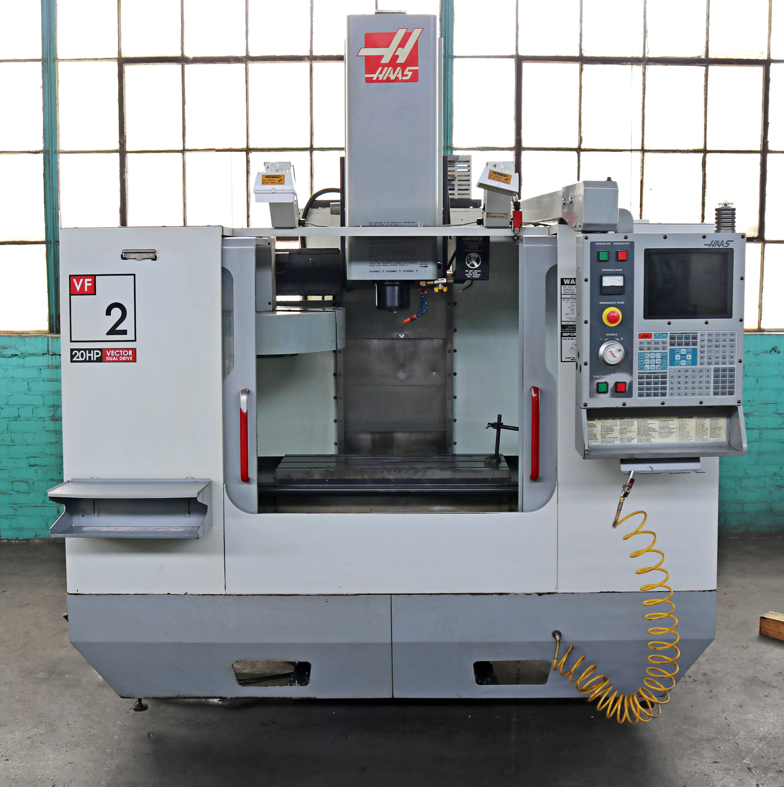

CNC means "Computer Numerical control" CNC is used for a variety of things. It's main focus is to make an object like a toy from whatever it is they give it. So if the people give the machine a block of aluminum and told it to make a water bottle, (and it's not just telling it. It takes programming and many other factors to work it properly) with the right instuctions, it could do that.
I didn't put much here because I didn't want to type everything out
Where the picture is from: https://www.normanmachinetool.com/product/haas-vf-2d-3-axis-cnc-vertical-machining-center/
CNC facts?Copyright: If your reading this, then don't even think about using my words anywhere, unless I get money. Then we might talk about it.